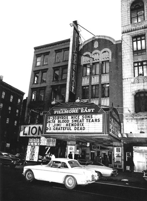
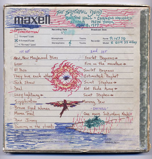

-
Bringing Out the Dead at the New York Historical Society
by Margaret Eby May 20, 2010
In 1971, Grateful Dead manager Jon McIntire slipped a notice into copies of the Grateful Dead (Skull & Roses) LP that became the liner note heard ’round the world: “Dead Freaks Unite! Who are you? Where are you? How are you? Send us your name and address and we’ll keep you informed.” Thus was established one of the most prolific and intense bonds between a band and its fan-base in pop music history. Before Justin Bieber became king of the twitterverse and Lady Gaga inspired an academic journal, before the age of Myspace profiles and instant e-mail newsletters, the Grateful Dead established a diverse and loyal group of followers the old-fashioned way, maintaining a rapport through newsletters and a general openness towards their adoring Deadheads. For close to three decades, the Grateful Dead successfully constructed their own subculture, a hallucinogenic-friendly, tie-dyed group with Jerry Garcia as their gentle, bearded leader.
The New York Historical Society initially seems like an odd place to commemorate the achievements of the Grateful Dead, rubbing shoulders with artifacts of the American Revolution and John James Audubon’s watercolors. But browsing through the Society’s exhibit of items from the Grateful Dead Archive at UC Santa Cruz, it begins to make sense. The Dead’s roving entourage included a number of graphic designers, photographers, illustrators, and filmmakers that rode along with the equipment crew, effectively creating a mobile artists commune. And then there’s the fan art: carefully decorated envelopes, jigsaw puzzles, comic book strips featuring Bob Weir. The Grateful Dead may not have invented the fan-band interaction, but they perfected it, and their insights have spread their tendrils throughout popular culture recently reaching as far as the Obama campaign. It’s no accident that the remaining members of the Grateful Dead gathered twice to perform benefits for the president’s 2008 campaign and though he might be less heavy on the psychedelics, many of Obama’s strategies came right out of Phil Lesh’s playbook. (Even Obama’s rising sun campaign logo has some fleeting resemblance to the Dead’s “Steal Your Face” skull—if you stare at it long enough).
The exhibit, which was curated by Bill Kreutzmann and Grateful Dead archivist Nicholas Meriwether, traces the group from their beginnings as Ken Kesey’s house band to their status as rock-roots legends, dotting the path with glass cases full of memorabilia and day-glo t-shirts. There are Alton Kelley and Stanley Mouses’s famous skeleton and roses posters, photographs of the Dead playing at the Columbia University protests in 1968 (They snuck onto campus in a bread delivery truck), and all manner of ticket stubs, backstage passes, platinum records, and gently used instruments once plied by ex-Grateful Dead members. Perhaps the most impressive part of the collection is the arrangement of the life-sized skeleton marionettes used in the music video for “Touch of Grey,” slumped in various poses in front of an enormous American flag.
Part of the Grateful Dead’s aesthetic mission was to make their music as unfiltered and undistorted as possible; the audience should hear the same thing that they heard on stage, free of monitor interference. As they filled bigger and bigger venues, this became what sound engineer Bob Matthews called “The Gig Worm Orouboros.” In one of the sketchbooks on display he writes succinctly: “Dilemma: the threshold for relevance—optimum, psycho-social distance (ambience) with audience.” The solution he and fellow audio engineer Owsley “Bear” Stanley—also famous as an LSD chemist—arrived at was a speaker tower of Babel-like proportions called the “Wall of Sound.” The blueprints present the details of a gargantuan structure, a mad architectural project set up during the band’s 1974 shows before the impracticalities and cost of the thing, which took up to 14 hours to set up and towered 40 feet high, forced it into early retirement.
Between the framed riders and guest lists—the Dead apparently required Budweiser, Dr. Pepper and fruit juice at every show, whiletheir honored guests included Bill Murray and Robin Williams –there isn’t much room devoted to the actual music. Throughout the exhibit, speakers at the top of every placard softly play an array of Grateful Dead’s greatest hits, but there’s not much to inspire the sort of fervor displayed all around. Part of this is a practical limitation: In such a small space, it would be difficult to play more than one song at once without becoming an incubator for migraines. But partly, I suspect, it’s because the Grateful Dead phenomenon exists independently of their music. They weren’t hardened showmen like the Rolling Stones or objects of teenage lust like the Beatles. Instead, they carved out a new space between musicians and music-lovers, a forum of mutual exchange. Fans could call up a hotline for Dead news and petition for backstage passes, and even record live performances with the band’s blessing. It’s testament to the band’s dedication to their fans that this exhibit exists, filled with the hand-crafted “Steal Your Face” yarmulkes and lovingly hand-colored illustrations that were sent to and saved by the members of the band. The exhibition, in fact, is as much about Deadheads as about the members themselves—and that is what secures the archives a place in an historical emporium instead of the Rock and Roll Hall of Fame or an aging hippie’s basement. The Grateful Dead harnessed the power of the crowd before crowd-sourcing was a verb, and they’re not going to fade from our cultural lexicon anytime soon. Whatever you think of “Box of Rain,” there’s no denying the significance of method that produced it. The Dead, it would seem, are here to stay.

1 Comment
Link Love: 5/28/2010 « The Bigger Picture
[...] up (of course, at UC Santa Cruz) and made the rounds online as many archivists’ dream job. Now, items from that archive are on display at the NY Historical Society, including the skeleton marionettes used in this awesome [...]